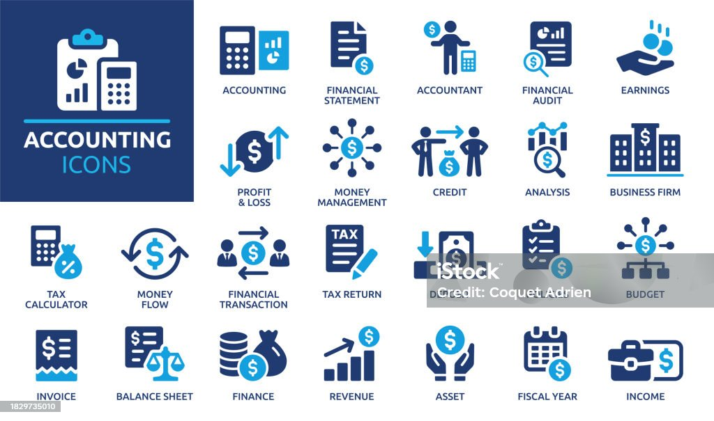

數字背後的
營運實質與管理決策
初會二涵蓋資產深化（應收、固定、投資）、流動負債準備與公司權益交易。企管系學會計，不僅要精通借貸平衡與 IFRS 準則，更要洞察報表勾稽、現金流品質與盈餘操縱防杜。

資產負債表與企管營運循環地圖
資產側 (Assets)
資金之運用與產能- Ch 8 應收帳款與票據 信用賒銷管理、備抵損失提列、淨變現價值 (NRV)、帳款週轉天數 (DSO)。
- Ch 9 固定與無形資產 長期產能建置 (CapEx)、三大折舊法、天然資源折耗、研發技術可行性分水嶺。
- Ch 13 金融資產投資 閒置資金配置、債券三分類 (AC/FVOCI/FVPL)、權益法 (20%~50%) 戰略結盟。
負債側 (Liabilities)
外部債權人之融資- Ch 10 流動負債與準備 商業信用 (應付帳款)、營業稅代收代繳受託人本質、預收收入商模、短期償債力。
- IAS 37 負債準備 (Provisions) 現時義務、很有可能 (>50%)、金額可靠估計；產品保固跨期核算與餅乾罐防杜。
- Ch 11 非流動負債 (前瞻) 應付公司債折溢價攤銷 (有效利率法)、長期財務槓桿與利息保障倍數。
權益側 (Equity)
股東永久出資與盈餘- Ch 12 公司組織與股本交易 普通股/特別股發行、庫藏股成本法 (權益扣減科目)、股權結構與表決權。
- 股利分配三部曲與股票分割 現金股利 (真實流出) vs 股票股利 (盈餘轉增資) vs 股票分割 (無分錄)。
- 普通股東權益報酬率 (ROE) 杜邦分析三因子拆解：獲利能力 $\times$ 資產週轉 $\times$ 財務槓桿。
應收帳款評價、備抵法與票據計息
備抵法三階段分錄 (Allowance Method) IFRS 強制採用（禁直接沖銷法）
貸：備抵損失 (Allowance for Doubtful Accounts) $12,000
貸：應收帳款－特定客戶 (Accounts Receivable) $500
2. 正常收現：借 現金 $500 / 貸 應收帳款 $500
沖銷前：AR $200,000 - 備抵 $12,000 = $188,000
沖銷後：AR $199,500 - 備抵 $11,500 = $188,000 (NRV 完全不變！)
帳齡分析兩步驟法則 (Aging Schedule)
Step 1: 依逾期天數各級違約率加總算出期末「應有貸方餘額 (Target Balance)」。
Step 2: 比較期末調整前餘額，倒擠本期調整金額：
$$\text{本期調整額} = \text{目標貸餘} - \text{調整前貸餘 (或 } + \text{調整前借餘)}$$
企管解讀：Adidas 每年將帳款週轉 8 次，資金被客戶佔用時間少 27 天，流動性顯著優於 Nike。
不動產廠房設備、折舊方法與無形資產
三大折舊計算法全覽 (Depreciation Methods) 折舊為成本分攤，非資產評價
若建築物之主體結構 (40年)、HVAC 空調 (5年)、地板工程 (10年) 具不同年限，**必須分別單獨提列折舊**！
研發支出 (R&D) 資本化分水嶺 IFRS 準則
• **技術可行性達成後** $\implies$ **資本化為無形資產！**
無形資產攤銷 vs. 減損規則
- • **有限年限 (專利、版權、特許權)**：法定年限與經濟年限取短者直線攤銷。
- • **非確定年限 (商譽 Goodwill、商標權)**：**不攤銷**，每年定期進行強制減損測試。
- • **天然資源折耗 (Depletion)**：開採時借記**「存貨」**而非費用！售出時才轉銷貨成本。
流動負債、IAS 37 負債準備與流動性分析
確定流動負債 vs. IAS 37 負債準備 時間或金額具不確定性
營業稅是代政府向消費者徵收，**絕對不是賣方的費用**！收現時貸記「應付營業稅」。
服務未履行前先收現，列為流動負債。為企業創造零資金成本的高質量營運現金流。
現時義務
(Probable > 50%)
可靠估計
期末估計保固負債 $= (\text{總銷量} \times \text{瑕疵率} - \text{當年已修數}) \times \text{單位維修成本}$
次年客戶送修時，**直接借記「負債準備－產品保固」**，不再認列費用！
短期償債能力核心指標 Chen Group 題解
• **營運資金** $= \text{Current Assets} - \text{Current Liabilities} = \mathbf{¥140,000}$
• **流動比率** $= \frac{\text{Current Assets}}{\text{Current Liabilities}} = \frac{¥210,000}{¥70,000} = \mathbf{3.0 \text{ 倍}}$
• **速動比率** $= \frac{\text{現金} + \text{短期投資} + \text{應收款淨額}}{\text{流動負債}}$ (剔除存貨與預付費用)
⚠️ 破解期末「美化報表 (Window Dressing)」
當企業原流動比率 > 1.0 (例如 $CA=200, CL=100 \implies CR=2.0$)：
經理人在 12/31 刻意動用現金 $50 清償應付帳款 $50：
審計與企管洞察：實質營運資金完全沒變 ($100)，但流動比率卻虛增至 3.0 倍！經理人常用此手法向銀行騙取寬鬆借款條件。
公司權益、庫藏股交易與股利決策
庫藏股成本法 (Treasury Shares) 權益扣減科目 (Contra-Equity)
貸：現金 (Cash) $320,000
1. **宣告日 (Declaration)**：正式產生法定流動負債 (應付股利)！
2. **除息基準日 (Record)**：停止過戶造冊，**不作任何會計分錄**！
3. **發放日 (Payment)**：以現金清償應付股利負債。
四方案影響對比 (Lucerne AG) Class Exercise 1
| 項目 | 股票股利 | 現金股利 | 2:1 分割 |
|---|---|---|---|
| 保留盈餘 | 減少 (D) | 減少 (D) | 不變 (NC) |
| 股本總額 | 增加 (I) | 不變 (NC) | 不變 (NC) |
| 每股面額 | 不變 (NC) | 不變 (NC) | 減半 (D) |
| 流通股數 | 增加 (I) | 不變 (NC) | 加倍 (I) |
| 股東總權益 | 不變 (NC) | 減少 (D) | 不變 (NC) |
ROE 杜邦分析終極三分解
警惕高槓桿陷阱：靠膨脹負債（權益乘數）拉高 ROE 的企業，一旦景氣衰退極易引發債務崩塌。
金融資產投資、IFRS 9 與權益法機制
IFRS 9 債券 vs. 股票評價原則 重分類禁令
• 處分時：✅ 允許重分類 (Recycling)！先前累積於 AOCI 之損益轉入當期損益表「處分利益」。
• 處分時：❌ 嚴禁重分類 (No Recycling)！全數差額直接結轉「保留盈餘」，絕對不能碰損益表！(防範 Cherry-Picking 操縱淨利)。
權益法 vs. 公允價值法雙軌對照 Class Exercise 1 (P13.4)
| 事項 | 公允價值法 (FVPL) | 權益法 (Equity Method) |
|---|---|---|
| 收到現金股利 | 認列「股利收入」+£54k | 沖減「投資帳面值」-£54k (資產收回，非收入！) |
| 被投資公司獲利 | ❌ 不作分錄 | 按 30% 認列「投資收益」+£96k 並墊高投資成本 |
| 期末市價大漲 | 認列「評價利益」+£280k | ❌ 不作分錄 (無視股市短線波動) |
| 損益表總貢獻 | +£334,000 (市價驅動) | +£96,000 (實質本業獲利) |
跨章節終極收斂：現金流量表間接法勾稽前瞻
營業活動現金流量 (間接法直觀加減法則) Net Income $\to$ Cash Flow

現金轉換循環 (CCC) Days
負 CCC 商業霸權：蘋果與好市多能做到負的 CCC，代表利用供應商的資金做生意，手頭擁有巨額充沛自由現金流！
企管經理人的會計核心心法
「會計不是死記借貸的技術，而是經理人溝通商業實質、配置稀缺資源與防杜營運暴雷的最高語言。」
注意帳齡分析違約率的突然變動、維修費用資本化（WorldCom 翻版）、保固準備與商譽減損的「大洗澡」伎倆。
高淨利不代表有現金，檢視應收帳款與存貨是否暴增；高 ROE 可能是過度舉債（權益乘數）硬撐出的流動性炸彈。
善用股票 FVTOCI 隔離短線股價波動，透過權益法深耕戰略結盟，維持健康合理的現金轉換循環 (CCC)。